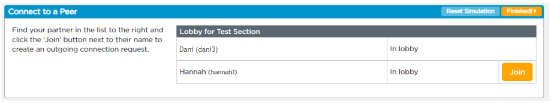
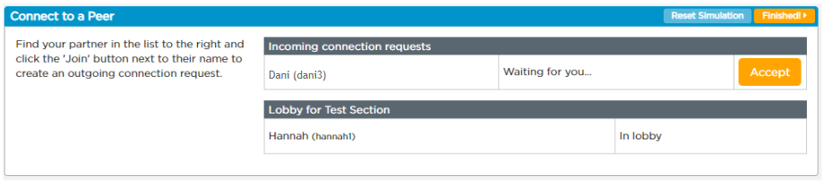

Use the Lesson 2.1 Activity Guide as you think, then post your answer to the board. It’s ok to have an incomplete answer, just write down what you know.
What is the Internet?
Think about what parts you know and what parts you don’t, then post a question to the board. We’ll take a look at the board together once everyone has posted.
What questions do you have about how the Internet works?
In this unit, we are going to use a tool to understand how the Internet works, layer by layer. Just like the layers of abstraction we talked about when representing digital information, there are layers to the Internet.
This tool is called the Internet Simulator. Let’s check it out!
Click here or go to dot 4 on code.org.
Find your partner in the lobby list and click Join next to their name to send a connection request. They’ll accept it on their end to connect.


Take five minutes to explore the tool with your partner and see what you can do with it.
How does the Internet Simulator work? What can you do with it? Are there any limitations?
How is the Internet Simulator similar to the Internet? How is it different?
Now that you’ve explored the simulator, let’s pick the video back up.
Resume at 1:30You can’t escape from contact with the Internet. So why not get to know it? — Vint Cerf
But you don’t have to take Vint Cerf’s word for it. Some of the largest issues facing society hinge on an understanding of how the Internet functions. At the end of this unit, you’ll do a project focused on a societal issue, so keep your ears and eyes open for how things work as we go.
Many of these issues come from people taking advantage of the open protocols that make the Internet function, which is something we’ll learn about later in this unit. For example, there are two major issues to think about:
The principle that Internet service providers should enable access to all content and applications regardless of source, without favoring or blocking particular products or websites.
An attempt to control or suppress what can be accessed, published, or viewed on the Internet by certain people. It can protect people, but it can also be used to limit free speech.
To have an informed opinion, it helps to understand the technical underpinnings of how the Internet works. A major issue our society faces is that far too few people actually understand how the Internet works.
We’re going to change that over the next few lessons.